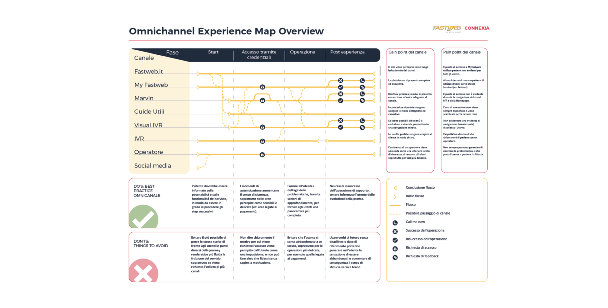

05 Connexia · Product Design & Innovation
Connexia.
Product design and innovation consulting — bringing emerging, unconventional technologies into clients' digital products and campaigns. Product design e consulenza d'innovazione — portare tecnologie emergenti e non convenzionali nei prodotti digitali e nelle campagne dei clienti.

Experience mapOmni-channel service experience map.Experience map di servizio omnichannel.
01 ContextContesto
Connexia is a media company focused on advertising. I joined the innovation division, working on clients' websites, e-commerces and digital products. Beyond UX projects, I also worked on communication campaigns, proposing innovative, unconventional technologies — including mixed, augmented and virtual reality. Connexia è una media company focalizzata sull'advertising. Sono entrato nella divisione innovazione, lavorando su siti, e-commerce e prodotti digitali dei clienti. Oltre ai progetti UX mi sono occupato anche di campagne di comunicazione, proponendo tecnologie innovative e non convenzionali — incluse mixed, augmented e virtual reality.
02 RoleRuolo
I worked as a Product Designer within a consulting team alongside graphic designers, innovation consultants and copywriters. I was responsible for the discovery and scouting of emerging technologies, and for imagining how they could fit into clients' projects. Ho lavorato come Product Designer in un team di consulenza insieme a graphic designer, innovation consultant e copywriter. Ero responsabile della discovery e dello scouting delle tecnologie emergenti, e di immaginarle calate nei progetti dei clienti.
03 ChallengesSfide
- Projects spanned completely different domains, with very different challenges, without a standard process — yet approached with the same method.I progetti spaziavano in ambiti completamente diversi, con sfide molto diverse, senza un processo standard ma affrontati con lo stesso approccio.
- Not every technology available on the market matched a project's specific needs.Non tutte le tecnologie disponibili sul mercato si sposavano con i bisogni specifici del progetto.
- Organizing workshops based on project type, not always with all the necessary data available.Organizzare workshop in base alla tipologia di progetto, non sempre con tutti i dati necessari a disposizione.
- Presenting to and involving stakeholders at different levels within the same project, adapting data granularity and tone of communication ad hoc.Presentare e coinvolgere nello stesso progetto stakeholder di livelli diversi, adattando di volta in volta la granularità dei dati e il tono della comunicazione.
04 ClientsClienti
I worked across many clients in the agency's portfolio, on projects varying in size and impact. Ho lavorato su molti clienti del portfolio dell'agenzia, su progetti diversi per dimensione e impatto.
Fastweb
- Ran business-needs gathering with internal and external stakeholders.Raccolta dei bisogni di business con stakeholder interni ed esterni.
- Mapped the full omni-channel customer-service blueprint, to provide a comprehensive guide for all operators.Mappatura dell'intero blueprint omnichannel del customer service, per fornire una guida completa a tutti gli operatori.
SisalPay
- Redesigned and tested the back-office portal, including its information architecture.Riprogettazione e testing del portale di back-office, inclusa la sua architettura informativa.
- Delivered the required screens, plus the analyses and tests, to the client's stakeholders.Consegna delle schermate necessarie, oltre alle analisi e ai test, agli stakeholder del cliente.
ActionAid
- Helped define the company strategy and initiatives roadmap — tools, methods and activities to redefine scope, prioritize the backlog and establish a collaborative framework.Supporto nella definizione della strategia aziendale e della roadmap delle iniziative — strumenti, metodi e attività per ridefinire lo scope, prioritizzare il backlog e stabilire un framework collaborativo.
- Supported training activities for the client's team.Supporto alle attività di formazione del team del cliente.
And moreE altro
- Supported the creation of a gamified framework to introduce open-innovation practices into company processes.Supporto alla creazione di un framework gamificato per introdurre pratiche di open innovation nei processi aziendali.
- Proposed, developed and delivered Meta filters for clients like Yamaha and Decathlon.Proposta, sviluppo e consegna di filtri Meta per clienti come Yamaha e Decathlon.
05 Key learningsLezioni chiave
- Navigating by sight at times, within a clear and defined perimeter, lets you break out of a rigid standard scheme and better cover the client's needs.Navigare a vista in alcuni momenti, in un perimetro chiaro e definito, permette di uscire da uno schema standard rigido e coprire meglio le esigenze del cliente.
- Researching and staying informed, even on areas not directly connected to the client's scope, is essential to widen the pool from which the solution is drawn.Documentarsi e informarsi, anche su ambiti non direttamente collegati al perimetro del cliente, è fondamentale per ampliare il bacino da cui si trae la soluzione.
- A well-formulated question helps more than many answers.Una domanda, se ben formulata, aiuta più di molte risposte.